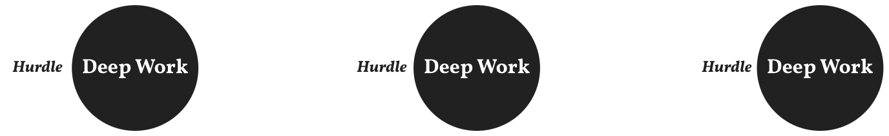
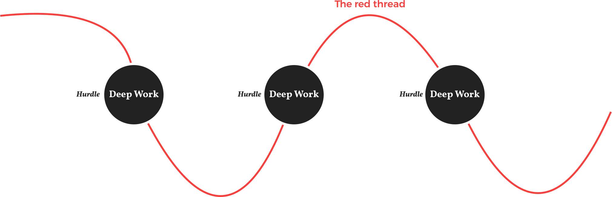

Der Prototyp funktioniert komplett Offline. Wir tracken keinerlei persönliche Daten. Aus Testgründen tracken, ob und wie lange die App eingesetzt wird. Wenn du Fragen, Probleme oder Feedback hast dann kontaktiere uns einfach. Wir sind für alle Verbesserungsvorschläge oder jegliches, generelles Feedback offen.
Being successful in the 21. Century, means doing work that requires your complete cognitive ability. Doing hard to reproduce work excites most knowledge workers but that requires being „in the zone“. Unfortunately, there is a problem with that. When talking with our target group, they told us: Getting into the zone requires overcoming a hurdle which can be very challenging and leads to procrastination. That’s what we want to tackle.
One concept to tackle hard to reproduce work is deep work. Deep work means to eliminate all disrupting factors to work with full concentration on a difficult task. Before entering a Deep-Work-Phase, there is a hurdle. To overcome that, we came up with a simple idea.

Connect the deep work phases of the same tasks and thereby eliminate the hurdle to entry. It is also possible to connect different tasks of the same project. How are we going to do that? When completing a deep work session we save the context, which means music, your tools, all your surroundings. Then when you continue the task you are right there where you left off - the songs picks up where it ended the last time, all your tools are open again and you can continue your task like you have never left in the first place.